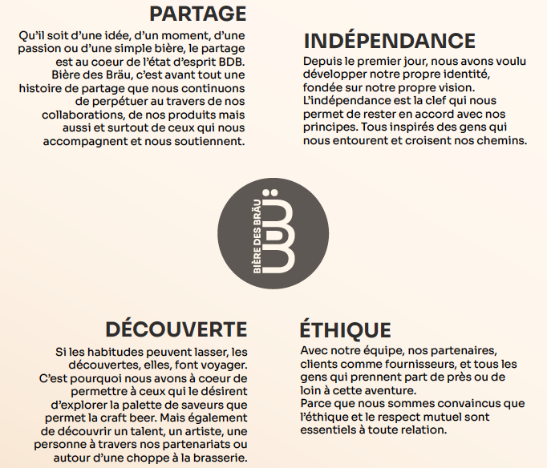

Qui sommes-nous ?
Notre histoire
Bière des Bräu est une microbrasserie indépendante
installée au pied des montagnes depuis fin 2020, dans la
métropole grenobloise.
Et puis la fougue du quart de siècle et une passion
commune pour l’entrepreneuriat s’en sont mêlés :
Bière des Bräu était née.
Le nom trouve son origine dans une double référence : d’un
côté avec l’orthographe du terme brassicole allemand
«Bräu». De l’autre avec le diminutif anglais «Bro» (frère)
en référence aux valeurs de la marque et à l’histoire des
deux fondateurs.
Nos valeurs
